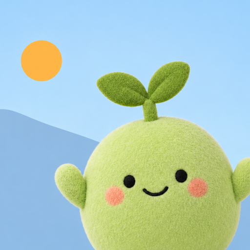

Too precious to take outside? Afraid it gets dirty or lost, even in a clear pouch? Photograph your plushie once at home; it stays safe there, and still joins every photo you take.
Your plushie is precious.
You'd love to take it along for photos, but you worry it'll get dirty or lost. Even tucked safely in a clear pouch, it's hard not to worry the whole day.
With PlushCam you photograph your plushie once, at home. After that, wherever you go, open the camera and it's already in the shot. Your plushie stays safe at home, and it's still in every photo.
Too big to carry, or just forgot it today? That works too.
Handheld
Just like holding it up to the lens: the bottom half stays out of frame, so it looks like it's really in your hand.
Full body
Your plushie stands in the scene with a soft shadow at its feet, as if it's sitting on the ground or a table.
Switch between them in one tap, or drag it anywhere in between.
Didn't think of it at the time? Pick a photo from your gallery and place your plushie in it. It's saved in high resolution.
Save your first 3 photos for free, with a small PlushCam watermark in the corner. Then buy a lifetime membership once for unlimited photos with no watermark, unlimited plushies, and backups you can take to a new phone. No ads, no subscription.
No sign-up, no sign-in. Your plushies and photos stay on your phone, and the cut-out is done on your phone too.
Haven't photographed your own yet? PlushCam comes with an original buddy, Sprouty, so you can try it right away.